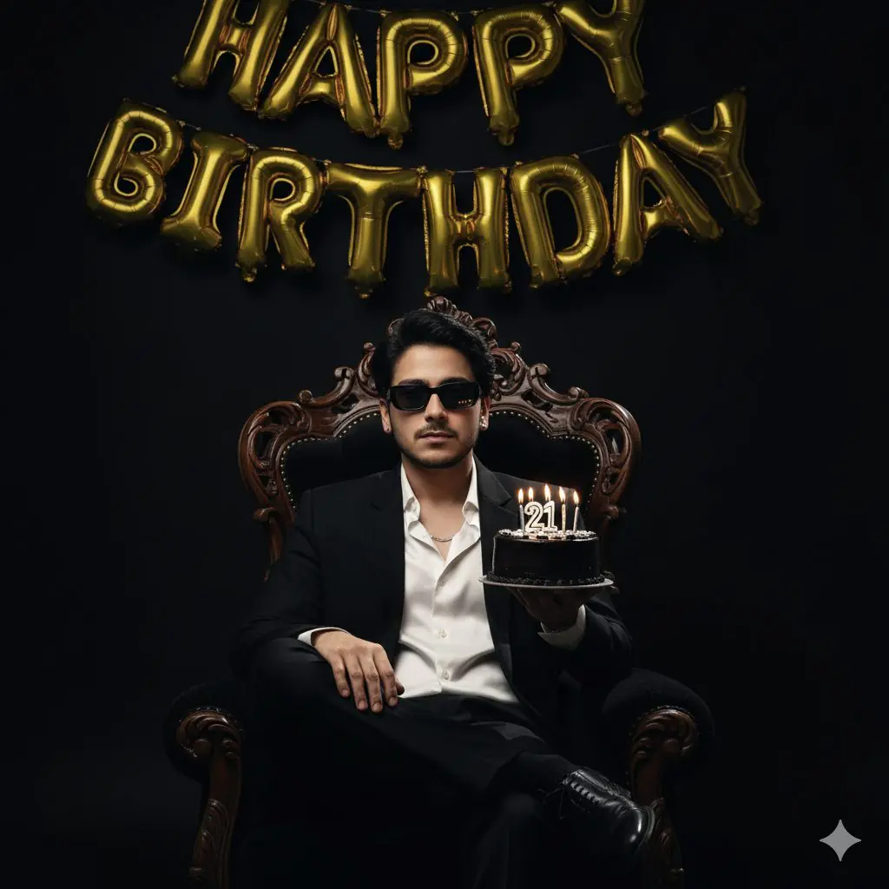
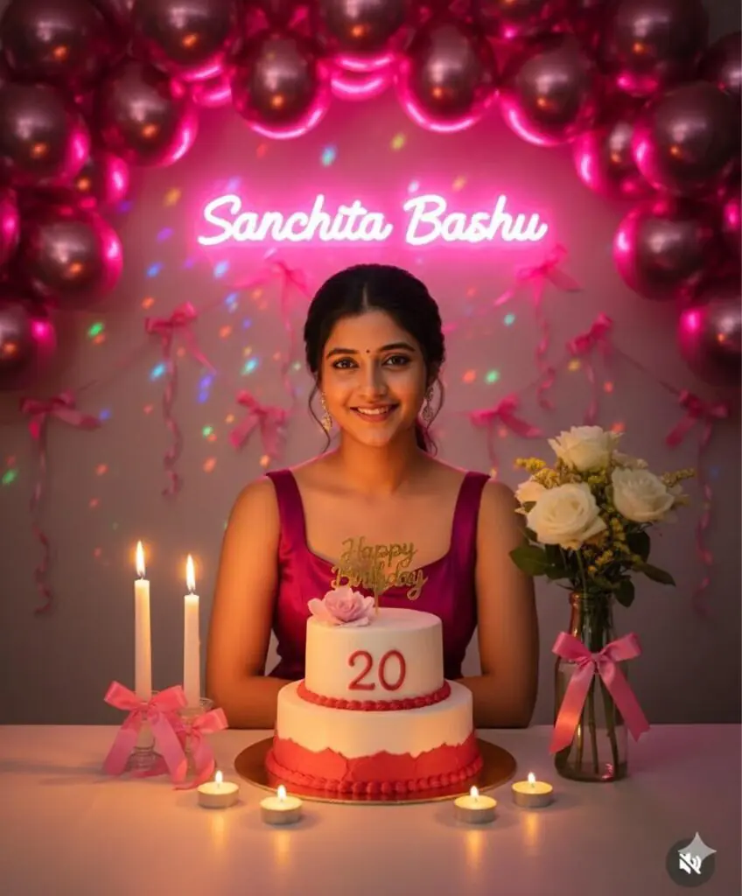

Try this new Happy Birthday photo editing prompts for Gemini AI.
Want more awesome prompts?
Join our community and get the latest viral prompts daily.
Follow on Instagram
? AI PROMPT
An ultra-realistic, high-detailed editorial birthday photoshoot portrait of a me. And I want 100 percent same face as I uploaded image no alteration, He's seated relaxed and confidently on a king chair with a solid black background. He is holding a small, sleek black birthday cake in one hand that says "21" with lit candles. Gold "happy birthday" balloons are visible in the background. The man is wearing a black blazer over a fitted white silk shirt and black sunglasses black formal pant and black formal shoes. The lighting is dramatic and cinematic, giving a luxurious magazine vibe. The background element has a 4:3 ratio.
Just tap on prompt to copy full prompt.
? AI PROMPT
Ultra-realistic 8K cinematic full-body portrait of a 23-year-old Bangladeshi man standing confidently in a modern, stylish lounge, leaning slightly forward with an approachable pose. His face and hairstyle exactly match the uploaded reference image, perfectly styled, looking directly at the camera with a subtle confident smile. He wears a perfectly tailored monochrome blazer over a casual shirt, slim-fit pants, crisp white sneakers, and a smartwatc Directly in front of him is a large, elaborately decorated birthday cake, prominently placed, glowing warmly with "23" candles lit. He holds a cake-cutting knife in his hand, ready to slice the cake. Colorful balloons, shimmering confetti, and vibrant festive decorations surround the scene. Neon lights, fairy lights, and reflective surfac@d dynamic colorful reflections on glass, metal, and plush textures, enhancing the celebratory party atmosphere.Cinematic soft shadows, dynamic depth of field, trendy urban lifestyle vibe, high-fashion smart casual aestoetic, visually captivating, photorealistic textures, ultra-detailed, cheerful and energetic birthday celebration vibe. Camera angle slightly low to emphasize both the man and the large cake, with sparkling confetti gently falling5 around, creating a lively, cinematic birthday scene.
? AI PROMPT
A vibrant birthday celebration photoshoot of a man me standing beside a decorated birthday cake table. He is wearing a casual black Burberry Hoodie, black pants, a golden wristwatch, and a simple chain. He is smiling with joy, holdinga glass in one hand while standing near a two-tier chocolate cake with golden dripping design, decorated with chocolates, popcorns, and candles. The background has white, golden, and silver balloons arranged in a stylish arch with glowing neon 'Happy Birthday' sign. Colorful confetti is falling in the air, creating a fun and festive vibe. The man's face and hairstyle must be an exac! match to the reference image provided same beard style, same haircut and same facial details. Lighting should be cinematic, bright, andhigh-fashion style with sharp contrast
? AI PROMPT
Create a Image and I want 100 percent same face as I uploaded image no alteration, i am man stands in front of a Black THAR at night, holding a lit sparkler in one hand and a small birthday cake with lit candles in the other. He is wearing a black leather jacket, a white t-shirt, and black pants. The background is dark with some streetlights visible. The ikes image has a celebratory and slightly edgy vibe." Q+
? AI PROMPT
A 4K cinematic, ultra-realistic portrait of me wearing a pastel white chiffon dress with pastel pink laces and belts, flowy and elegant. I'm holding a pastel white frosted birthday cake with two layers - pastel white and pastel pink - decorated with pastel pink roses like a floral painting, and a sparkling candle flame on top. Scene is dark with a soft warm mid-light glowing from a beautiful table lamp. A neon shiny pastel pink balloon with "Happy Birthday" in white glowing letters floats beside me. I wear a tiny silver birthday crown, my hair is flowy, and I'm gazing at the cake gracefully, posing for a birthday photoshoot. Keep my face exactly accurate and unchanged. Soft pastel tones, dreamy atmosphere, cinematic lighting.Captured with a 50mm f/1.4 lens, shallow depth of field, soft bokeh background, high dynamic range, professional studio lighting, dramatic shadows, and gentle light reflections. Perfect focus on face and cake, film- grade composition.10:55
? AI PROMPT
This is me please convert this image into a portrait of a young woman on her 21st birthday, holding a birthday cake with a lit candle. She's dressed in a black princess dress and holds a bouquet of flowers. The numbers "21" are projected on the wall, and the scene is lit with warm, soft light.

? AI PROMPT
Create hyper realistic portrait, based on the given photo, keeping the original face exactly the same without any changes, birthday celebration portrait of a young woman sitting at a decorated table.– Woman: She is sitting at the center, facing forward, with long straight hair pulled back neatly. She is smiling gently, wearing a glamorous dress. Her expression is cheerful and natural, with glowing skin lit by candlelight.– Table setup: A birthday cake with white frosting and red lower border is placed in front of her write on cake her age “25”, topped with a pink flower and a colorful ‘Happy Birthday’ topper. The cake sits on a golden base plate. Surrounding the cake are lit candles – two tall white candles in glass holders wrapped with pink ribbon bows, and three small round tealight candles giving off a warm orange glow.– Flowers: On the right side of the table, there is a transparent glass bottle vase tied with a pink ribbon bow, filled with fresh white roses and small yellow flowers.– Background: The wall is decorated with metallic pink balloons arranged in a semicircle, reflecting colorful light spots. Pink ribbon bows are tied between the balloons on strings, giving a festive look. Write “Jaya Kishori” with neon lights on background – Lighting: Dim indoor lighting with warm tones from candles, creating a cozy golden-orange glow on the woman’s face and table, with soft pink reflections from balloons. Shadows on the wall enhance the intimate birthday atmosphere.– Camera angle: Straight-on perspective, mid-shot composition capturing the woman, the cake, candles, flowers, and background decorations clearly.– Mood: Warm, festive, intimate, birthday celebration vibe. Ultra-detailed textures (cake icing, candle flames, flower petals, balloon reflections), realistic skin tones, sharp focus, 8K resolution.